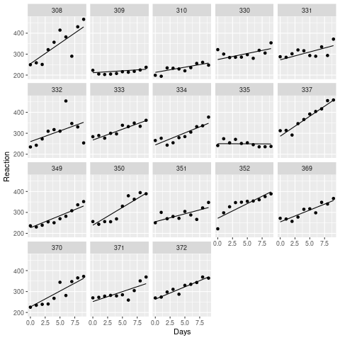
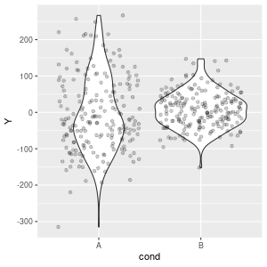
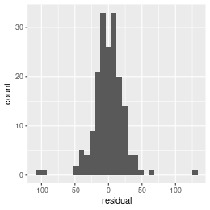
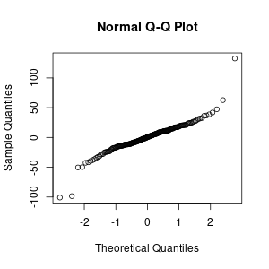

Created: 2022-11-03 Thu 08:54
Baayen, R. H., Davidson, D. J., & Bates, D. M. (2008). Mixed-effects modeling with crossed random effects for subjects and items. Journal of Memory and Language, 59, 390-412.
Clark, H. H. (1973). The language-as-fixed-effect fallacy: A critique of language statistics in psychological research. Journal of Verbal Learning and Verbal Behavior, 12, 335-359.
inner_join(subj, lists, "list_id")
subj_id list_id stim_id condition 1 1 1 A treatment 2 1 1 B treatment 3 1 1 C control 4 1 1 D control 5 2 2 A control 6 2 2 B control 7 2 2 C treatment 8 2 2 D treatment 9 3 1 A treatment 10 3 1 B treatment 11 3 1 C control 12 3 1 D control 13 4 2 A control 14 4 2 B control 15 4 2 C treatment 16 4 2 D treatment
The target of inference in much of psychology and related fields has been misidentified as a population of subjects or stimuli, when the actual target of inference is a population of events: encounters
Barr, D. J. (2018). Generalizing Over Encounters. In the Oxford Handbook of Psycholinguistics.
for each random factor (subjects/stimuli):
between-unit factors (or interactions involving them) never get random slopes
Barr, D. J. (2013). Random effects structure for testing interactions in linear mixed-effects models. Frontiers in Psychology, 4, 328.
Barr, D. J., Levy, R., Scheepers, C., & Tily, H. J. (2013). Random effects structure for confirmatory hypothesis testing: Keep it maximal. Journal of Memory and Language, 68, 255-278.
three way design, subjects only random factor
# A tibble: 128 x 5
subj_id A B C DV
<int> <chr> <chr> <chr> <dbl>
1 5 A1 B1 C2 4.80
2 5 A1 B2 C1 7.40
3 1 A2 B1 C2 0.444
4 6 A2 B1 C2 3.97
5 4 A1 B1 C2 2.90
6 4 A1 B2 C1 -0.0699
7 3 A1 B2 C2 2.75
8 1 A2 B2 C2 2.86
9 3 A1 B2 C2 0.452
10 8 A1 B1 C1 -0.694
# … with 118 more rows
count(dat1, subj_id, A, B, C)
# A tibble: 32 x 5
subj_id A B C n
<int> <chr> <chr> <chr> <int>
1 1 A2 B1 C1 4
2 1 A2 B1 C2 4
3 1 A2 B2 C1 4
4 1 A2 B2 C2 4
5 2 A2 B1 C1 4
6 2 A2 B1 C2 4
7 2 A2 B2 C1 4
8 2 A2 B2 C2 4
9 3 A1 B1 C1 4
10 3 A1 B1 C2 4
# … with 22 more rows
\(A\) is between, \(BC\) within, 4 obs / cell
DV ~ A * B * C + (B * C | subj_id)
DV ~ A * B * C + (? | subj_id) + (? | item_id)
dat2
# A tibble: 128 x 6
subj_id item_id A B C DV
<int> <int> <chr> <chr> <chr> <dbl>
1 7 13 A1 B2 C2 1.41
2 3 6 A1 B1 C2 3.62
3 3 1 A2 B2 C2 2.79
4 2 4 A1 B2 C1 -1.41
5 4 10 A2 B1 C1 0.971
6 7 5 A2 B2 C2 8.12
7 7 16 A2 B1 C1 7.66
8 6 3 A2 B1 C1 3.00
9 7 10 A1 B1 C2 0.644
10 6 9 A2 B2 C2 10.7
# … with 118 more rows
dat2 %>%
count(subj_id, A, B, C)
# A tibble: 64 x 5
subj_id A B C n
<int> <chr> <chr> <chr> <int>
1 1 A1 B1 C1 2
2 1 A1 B1 C2 2
3 1 A1 B2 C1 2
4 1 A1 B2 C2 2
5 1 A2 B1 C1 2
6 1 A2 B1 C2 2
7 1 A2 B2 C1 2
8 1 A2 B2 C2 2
9 2 A1 B1 C1 2
10 2 A1 B1 C2 2
# … with 54 more rows
DV ~ A * B * C + (A * B * C | subj_id) + (? | item_id)
dat2 %>%
count(item_id, A, B, C)
# A tibble: 128 x 5
item_id A B C n
<int> <chr> <chr> <chr> <int>
1 1 A1 B1 C1 1
2 1 A1 B1 C2 1
3 1 A1 B2 C1 1
4 1 A1 B2 C2 1
5 1 A2 B1 C1 1
6 1 A2 B1 C2 1
7 1 A2 B2 C1 1
8 1 A2 B2 C2 1
9 2 A1 B1 C1 1
10 2 A1 B1 C2 1
# … with 118 more rows
DV ~ A * B * C + (A * B * C | subj_id) + (1 | item_id)
When you get a convergence warning you should in the first instance:
then re-fit the model. If it still does not converge, seek to reduce the random effects structure, but proceed with caution.
You can also try different optimizers (see ?lme4::convergence)
"model is singular" is NOT a convergence warning
Reducing random effects can help convergence, but the worst thing you can do is remove the slope for a theory-critical predictor.
(A * B || subject)mod <- lmer(Reaction ~ Days +
(Days | Subject),
sleepstudy, REML = FALSE)
## fitted values:
## fitted(mod)
## residuals:
## residuals(mod)

n_obs <- 200L
dat3 <- tibble(cond = rep(c("A", "B"),
each = n_obs),
Y = c(rnorm(n_obs, 0, 100),
rnorm(n_obs, 0, 50)))
ggplot(dat3, aes(cond, Y)) +
geom_violin() +
geom_jitter(alpha = .2)

n_pts <- 10L
n_obs <- 50
dat4 <- tibble(
x = seq_len(n_pts),
y = map(x, # purrr::map()
~ rnorm(n_obs, 5 * .x, 10 * .x))) %>%
unnest() # tidyr::unnest()
ggplot(dat4, aes(x, y)) +
geom_point(alpha = .2) +
geom_smooth(method = "lm")
## resids from the model fit to sleepstudy
my_resids <- residuals(mod)
## it is a vector, must put into a tibble
## for ggplot
rtbl <- tibble(residual = my_resids)
ggplot(rtbl, aes(residual)) +
geom_histogram()

## sadly there is no qqplot for ggplot
## so we use base::qqnorm()
qqnorm(my_resids)

Vanhove, J. (2018). Checking the assumptions of your statistical model without getting paranoid. Preprint at https://psyarxiv.com/zvawb/.
Created by Dale Barr